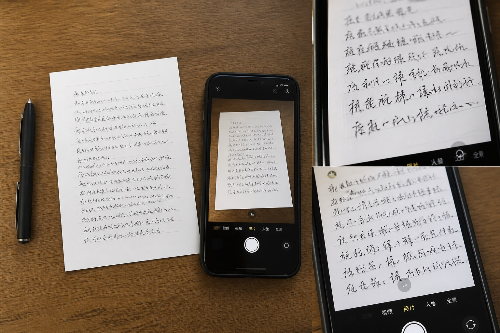

模仿笔迹看着像，为什么读起来仍有差别？
模仿笔迹的相似感不只来自单字外形，字距、行距和连续书写也会影响整体观感。结合模仿签名、模仿签字的场景差异，讨论笔迹鉴定中自然变化与稳定特征的关系。
模仿笔迹的相似感不只来自单字外形，字距、行距和连续书写也会影响整体观感。结合模仿签名、模仿签字的场景差异，讨论笔迹鉴定中自然变化与稳定特征的关系。

页面边缘、行距、留白和落款位置只有放回整页才能看清，局部近照更适合补充笔画细节。文章结合实际资料说明完整页面、文件版本和样本来源的整理方法。

同一姓名在正式落款、日常签收和快速登记中会形成不同版本，比较前应按场景分开。文章结合实际资料说明完整页面、文件版本和样本来源的整理方法。

原件、扫描件与聊天截图保留的信息不同，先标明来源和转发过程，后续查看才不会混淆。文章结合实际资料说明完整页面、文件版本和样本来源的整理方法。

从一页手写材料的三种照片说起，说明模仿笔迹参考图为什么要保留页面边缘、原始比例和未经压缩的完整图。
同一个名字连续签五遍也会有自然差别。文章从真实书写变化入手，说明模仿签名样本中稳定动作与偶然差异怎么看。
通常需要提供清晰的笔迹样本、目标字数、用途说明与完成时间，便于评估整体工作量。
价格主要受笔迹复杂程度、字数与时间影响，城市页面会提供更具体的服务说明。
可以。通过标准字稿采集、字符整理和字体生成，制作适用于常见软件的手写字体。
普通方案一般按照签字复杂程度、方案数量与调整次数确定时间，具体以需求评估结果为准。
轻微模糊的图片可以先评估；如果关键笔画、起收笔和转折不清楚，建议补充更清晰的原图或扫描件。
通常结合总字数、页面数量、样本复杂程度和交付时间综合评估，再给出具体说明。
可以。拍摄时应保持光线均匀、画面端正，并尽量保留完整纸张边缘，避免阴影遮挡笔画。
可以根据事先确认的范围进行细节调整，具体调整次数和内容会在开始前确认。